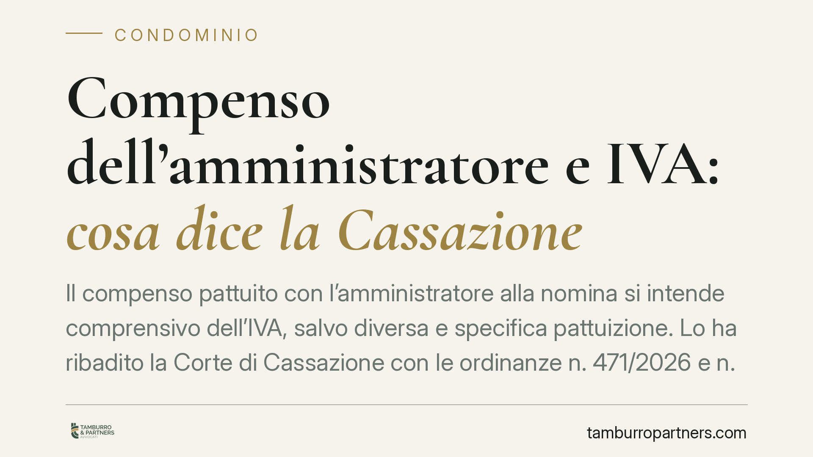
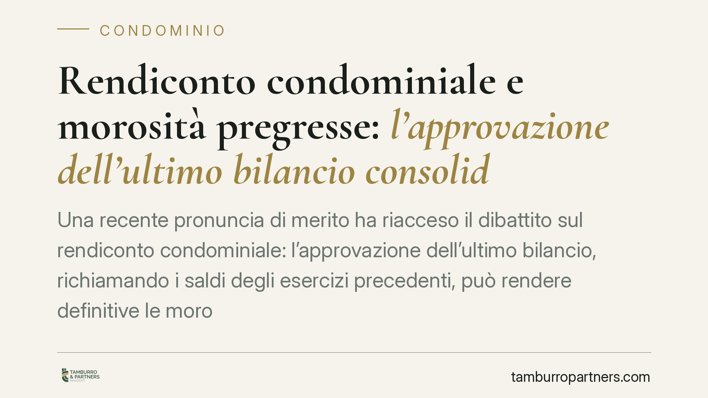
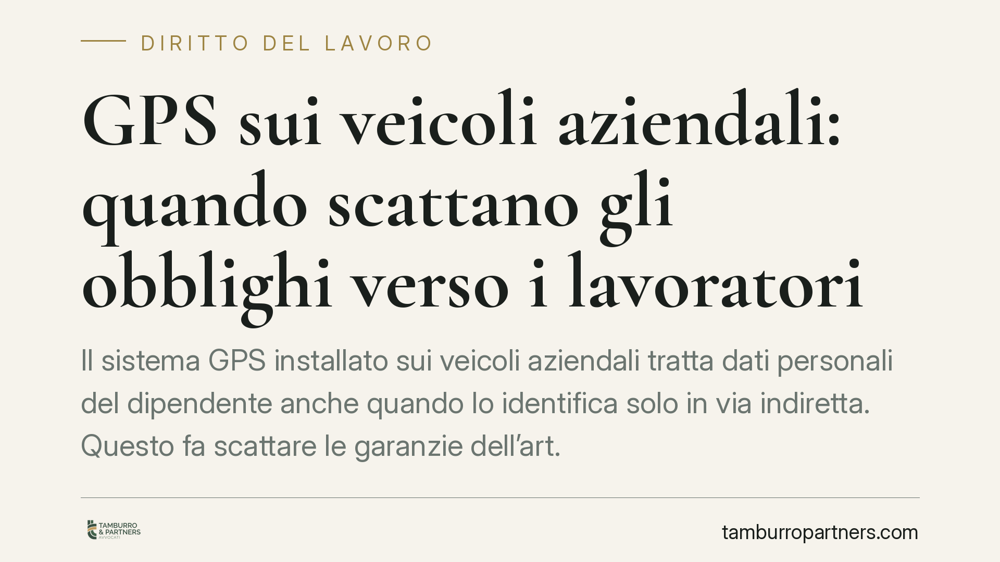
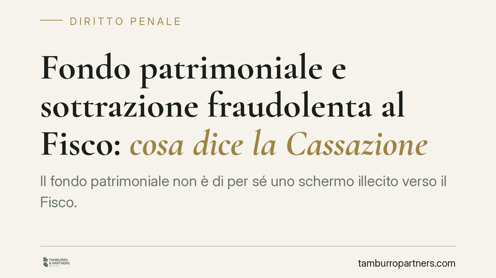
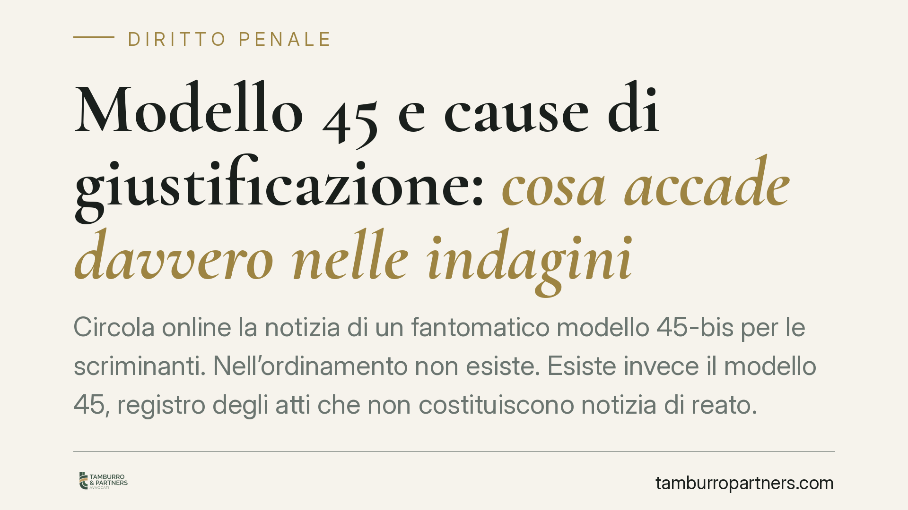
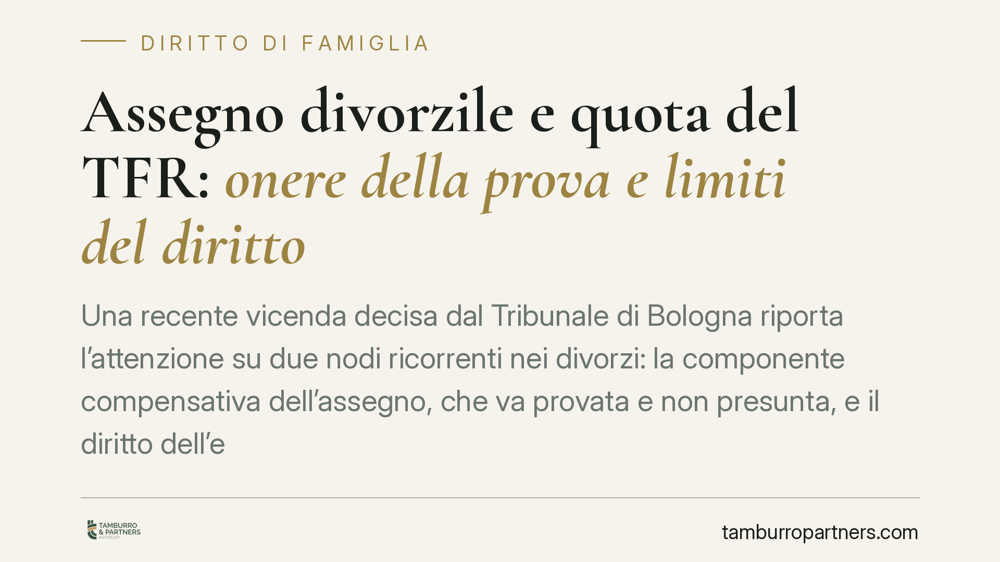

Diritto di critica del lavoratore: dove finisce la libertà e inizia la giusta causa
Un dipendente può criticare il proprio datore di lavoro, anche duramente. Ma accusarlo pubblicamente di rubare, senza prove, può costare il posto. Lo ribadisce il Tribunale di Roma…

Recesso dalla locazione commerciale per crisi economica: la Cassazione fa il punto
La Cassazione torna sul recesso del conduttore da una locazione commerciale e valuta se lo stato di crisi economica dell'impresa possa integrare i "gravi motivi" previsti dalla leg…

IA ad alto rischio e responsabilità penale: cosa monitorare
Circolano notizie su un intervento normativo che introdurrebbe un nuovo reato per la sicurezza dei sistemi di intelligenza artificiale ad alto rischio, con ricadute sulla responsab…

Infortuni sul lavoro e responsabilità dell'ente: quando la 231 colpisce la società
Negli infortuni sul lavoro l'azienda può rispondere in proprio, ai sensi del D.lgs. 231/2001, oltre alle persone fisiche imputate. Il punto critico è il legame tra il reato colposo…

Invalidità al 100% e amministrazione di sostegno: prevale l'autodeterminazione
Un'invalidità civile al 100% o un handicap grave non aprono automaticamente la strada all'amministrazione di sostegno. La Corte di Cassazione ha ribadito che ciò che conta è la ver…

Compenso dell'amministratore e IVA: cosa dice la Cassazione
Il compenso pattuito con l'amministratore alla nomina si intende comprensivo dell'IVA, salvo diversa e specifica pattuizione. Lo ha ribadito la Corte di Cassazione con le ordinanze…

Rendiconto condominiale e morosità pregresse: l'approvazione dell'ultimo bilancio consolida i debiti vecchi?
Una recente pronuncia di merito ha riacceso il dibattito sul rendiconto condominiale: l'approvazione dell'ultimo bilancio, richiamando i saldi degli esercizi precedenti, può render…

GPS sui veicoli aziendali: quando scattano gli obblighi verso i lavoratori
Il sistema GPS installato sui veicoli aziendali tratta dati personali del dipendente anche quando lo identifica solo in via indiretta. Questo fa scattare le garanzie dell'art. 4 de…
Deepfake sessuali e minori: quali tutele penali oggi
La diffusione di immagini sessuali generate con l'intelligenza artificiale coinvolge sempre più spesso minori, come autori o come vittime. Il quadro normativo italiano non è privo …

Fondo patrimoniale e sottrazione fraudolenta al Fisco: cosa dice la Cassazione
Il fondo patrimoniale non è di per sé uno schermo illecito verso il Fisco. Con la sentenza 5760/2026 la Cassazione precisa che la sua costituzione integra reato solo se l'atto è fr…
Trasferimenti immobiliari tra coniugi in separazione: la tutela dei creditori
La Corte di Cassazione ribadisce che i creditori possono attaccare i trasferimenti immobiliari tra coniugi inseriti negli accordi di separazione, quando servono a mettere al riparo…
Assegno «a saldo» incassato: l'assicurato può ancora chiedere di più?
Incassare un assegno indicato come «a saldo» non basta a dimostrare che le parti abbiano rinunciato a ogni pretesa. La transazione, per essere provata, richiede la forma scritta ex…
Affido condiviso: i figli devono stare lo stesso tempo con entrambi i genitori?
Dopo la separazione l'affido condiviso è la regola, ma non impone che i figli trascorrano esattamente metà tempo con ciascun genitore. La bigenitorialità tutela il rapporto con ent…
Passaggio generazionale e nuda proprietà di quote: la stretta dell'Agenzia delle Entrate
L'Agenzia delle Entrate interpreta in senso restrittivo l'esenzione dall'imposta di donazione per le quote societarie trasferite in nuda proprietà con riserva di usufrutto. Per ben…
Crediti R&S inesistenti e indebita compensazione: quando scatta il reato
L'uso in compensazione di un credito d'imposta per ricerca e sviluppo privo di reale fondamento tecnico-scientifico può integrare il reato di indebita compensazione. La distinzione…

Modello 45 e cause di giustificazione: cosa accade davvero nelle indagini
Circola online la notizia di un fantomatico "modello 45-bis" per le scriminanti. Nell'ordinamento non esiste. Esiste invece il modello 45, registro degli atti che non costituiscono…

Assegno divorzile e quota del TFR: onere della prova e limiti del diritto
Una recente vicenda decisa dal Tribunale di Bologna riporta l'attenzione su due nodi ricorrenti nei divorzi: la componente compensativa dell'assegno, che va provata e non presunta,…
Affido condiviso su accordo dei genitori: cosa valuta il tribunale
Quando due genitori conviventi si separano possono definire in accordo affido, casa familiare, mantenimento e spese. Il giudice non registra passivamente l'intesa: la verifica alla…

Vizi dei lavori in casa: il risarcimento comprende anche l'IVA
La recente giurisprudenza di legittimità conferma un principio rilevante per chi ristruttura casa: il risarcimento per i vizi dei lavori edili comprende anche l'IVA, quando il comm…

Sottrazione di minori tra genitori: quando scatta il reato
Quando un genitore trattiene o allontana il figlio dall'altro, si entra in un'area di confine tra conflitto familiare e rilevanza penale. Un orientamento della Cassazione sposta l'…

Trasparenza salariale: la direttiva UE 2023/970 e gli obblighi in arrivo per le aziende
La parità retributiva tra uomini e donne diventa una questione di dati, non solo di principi. La direttiva UE 2023/970 impone alle aziende obblighi di trasparenza sulle retribuzion…

Perquisizione nello studio dell'avvocato indagato: servono GIP e avviso all'Ordine
Le Sezioni unite penali chiariscono un nodo delicato: le garanzie dell'art. 103 c.p.p. valgono anche quando ad essere indagato è l'avvocato stesso. Ispezioni, perquisizioni e seque…

Incarico dirigenziale pubblico: nasce con l'annuncio o con il contratto?
Un candidato individuato come futuro dirigente pubblico non è ancora titolare dell'incarico. La Cassazione ribadisce che il rapporto nasce solo con l'atto formale di conferimento e…

Modifiche alla facciata condominiale: quando serve il consenso dell'assemblea
La facciata di un edificio è bene comune. Una recente pronuncia del TAR Campania torna sul punto: prima di rilasciare un titolo edilizio su interventi che incidono sul prospetto, i…

Licenziamento con messaggio vocale WhatsApp: la forma scritta non è opzionale
Un licenziamento comunicato con un messaggio vocale su WhatsApp è valido? Il Tribunale di Grosseto, con la sentenza 323/2026, torna sul nodo della forma del recesso datoriale. La q…

Riconoscimento facciale nelle indagini penali: a che punto siamo
Il riconoscimento facciale applicato alle indagini penali è al centro del dibattito legislativo europeo e nazionale. Non esiste ancora, nell'ordinamento italiano, una disciplina or…

Screenshot WhatsApp come prova delle ore lavorate: quando valgono in tribunale
Il Tribunale di Messina, con sentenza n. 1138/2026, ha ritenuto utilizzabili gli screenshot WhatsApp dei turni per provare l'orario effettivamente svolto, a condizione che ne siano…

Testamento olografo su più fogli e con date diverse: quando è valido
Un testamento scritto a mano su tre fogli separati, in momenti diversi e firmato solo alla fine può essere valido. Lo ha riconosciuto una recente pronuncia di merito, in applicazio…

Stalking e condotte riparatorie: perché il risarcimento non estingue il reato
Nel reato di atti persecutori il risarcimento del danno alla persona offesa non chiude la vicenda penale. Le condotte riparatorie previste dall'art. 162-ter c.p. non operano per lo…

Bonus assunzione donne: chi è la lavoratrice "molto svantaggiata"
Gli incentivi per l'assunzione di donne ruotano attorno a una distinzione tecnica spesso trascurata: quella tra lavoratrice "svantaggiata" e "molto svantaggiata". Da questa qualifi…